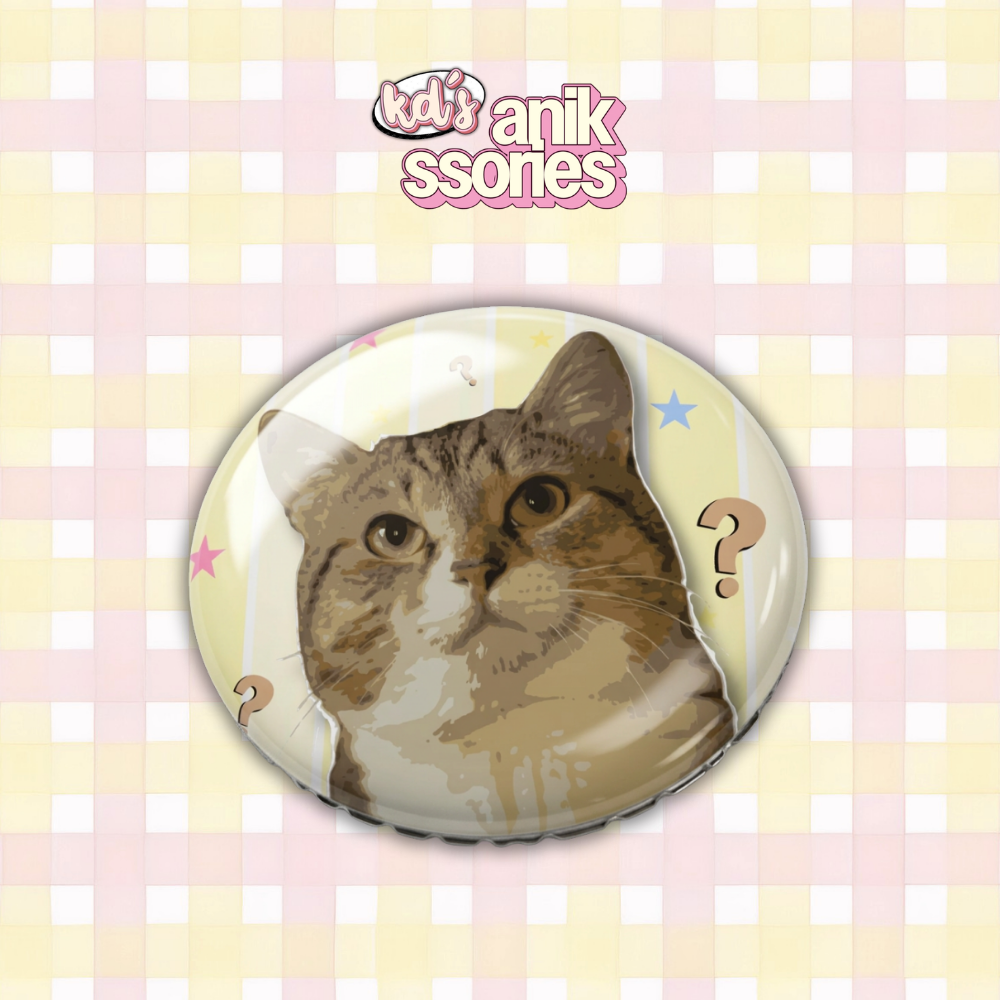
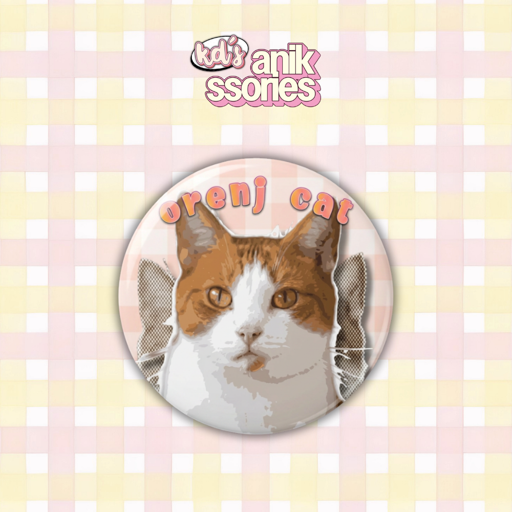
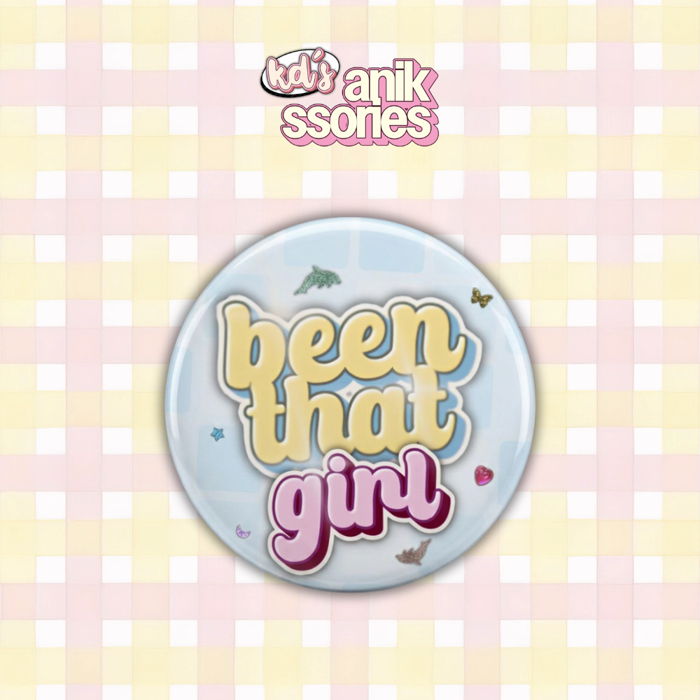
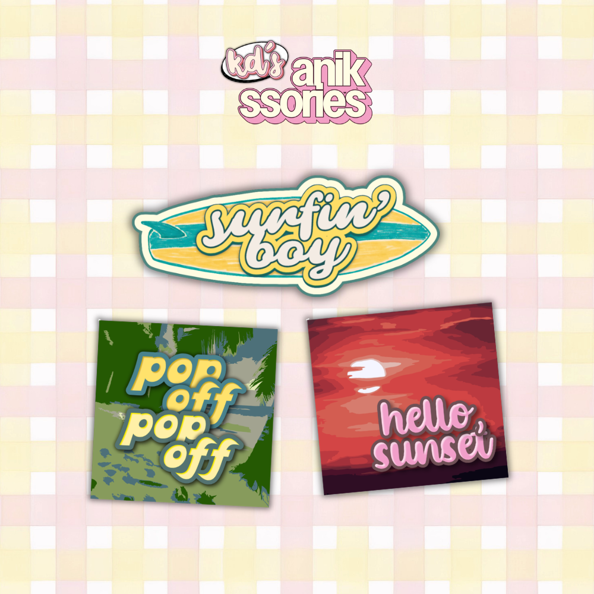
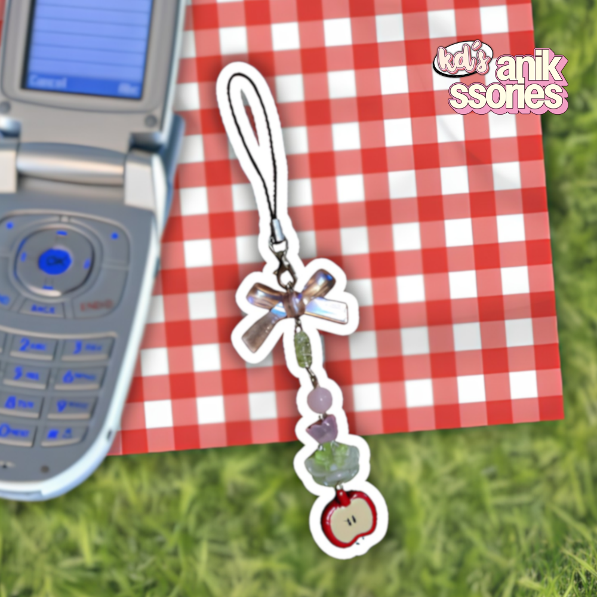

Cat Wondering Button Pin Badge
Php 15
A cute wondering cat pin that adds a playful touch to your anik-anik collection.

Php 15
A cute wondering cat pin that adds a playful touch to your anik-anik collection.

Php 15
An alluring orange cat pin made for fellow orenj cat lovers to treasure.

Php 15
A classy pin inspired from “BTG” by KiiiKiii to remind yourself you’re that girl.

Php 30
A sticker set inspired by K-pop song titles, perfect for decorating your favorite things.

Php 40
A beaded lotus ribbon charm inspired by a Chinese series, made to feel like a little souvenir.

Php 25
A simple, minimal lotus charm made for anyone who likes cute but a clutter-free phone charm.
